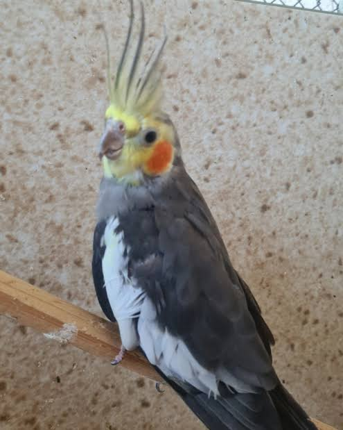

Calopsitas
Seja bem-vindo ao Cantinho do Topete! O lugar onde o amor pelas calopsitas ganha asas. Aqui, cada detalhe é pensado com muito carinho para oferecer o máximo de conforto, saúde e alegria para o seu melhor amigo de penas.
Another example headline.
Some representative placeholder content for the second slide of the carousel.
One more for good measure.
Some representative placeholder content for the third slide of this carousel.
Tipos de Calopsitas
Essa é a Kiuca, uma calopsita silvestre. Ela é muito alegre, esbanja energia e passa o dia
inteiro comendo e se divertindo! A Kiuca carrega o padrão original e ancestral da espécie, vinda
diretamente das regiões semiáridas da Austrália. Ao contrário das mutações coloridas que
conhecemos hoje, ela exibe a beleza pura da natureza: um corpo cinza elegante, bordas das asas
brancas e as icônicas bochechas laranjas.
Nos machos adultos, a cabeça se ilumina com um amarelo
vibrante, enquanto as fêmeas mantêm um tom acinzentado discreto e gracioso.
No Brasil, ela é classificada como uma ave exótica e doméstica pelo IBAMA. Isso significa que
sua criação é 100% legalizada e livre, tornando-as companheiras perfeitas, seguras e cheias de
personalidade para se ter em casa!

Kiuca
Esta é a Gabi, uma calopsita arlequim! A Gabi é pura fofura e chama a atenção de qualquer um com o
seu visual único. A mutação arlequim foi a primeiríssima variação de cor a ser desenvolvida em
cativeiro, quebrando o cinza tradicional da espécie. O charme da Gabi está justamente nessa mistura
linda de manchas amarelas, brancas e cinzas espalhadas pelo corpo, fazendo com que cada ave dessa
mutação seja completamente exclusiva nenhuma arlequim tem as manchas iguais às de outra!
Ela é uma ave exótica e doméstica totalmente legalizada no Brasil, trazendo um
colorido especial para o dia a dia e está sempre pronta para encher a casa de vida, curiosidade e
momentos divertidos!

Gabi
Esta é a Adriana, uma linda calopsita lutino! A Adriana é pura luz e encanta a todos com o seu
visual angelical e radiante. A mutação lutino é uma das mais famosas do mundo e se destaca por ser
uma ave albina parcial: ela não produz a melanina cinza, o que resulta em uma plumagem inteiramente
amarela ou branca-marfim, olhos vermelhos expressivos e bochechas laranjas super acesas e
vibrantes!
. É uma ave doméstica totalmente legalizada no Brasil. Com sua cor de sol e sua presença marcante, ela completa o bando trazendo muita elegância, doçura e alegria para o dia a dia!

Adriana